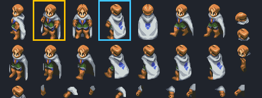
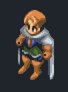
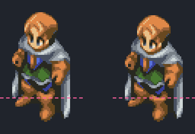
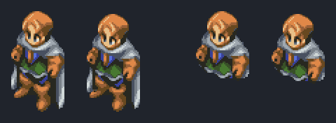
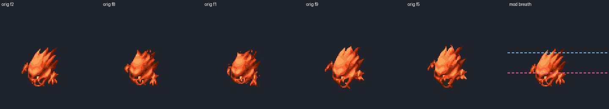

Idle Animations: Still & Breathing
От автора:
Я создал этот мод с помощью Cloude Code, дизайн и тесты тоже на мне. Я новичок в игре, поэтому пока не смог как следует проверить мод на всех существах, боссах и так далее. Я доберусь до них по мере прохождения сюжета. Если хотите помочь, пришлите мне сохранение, в котором нашли ошибку, и я постараюсь её исправить.
Я сделал этот мод, потому что никогда раньше не играл в эту игру и давно хотел, но одна вещь всегда меня раздражала. Понимаю, что тех, кто уже играл в FFT, анимации ожидания, скорее всего, устраивают. Но мне они никогда не казались правильными, особенно учитывая, что в сюжетных сценах персонажи стоят неподвижно. Так что мод я сделал в основном для себя. Я видел, что другие тоже спрашивают о таком, поэтому и делюсь им. Я буду обновлять мод по мере обнаружения новых ошибок. Я знаю, что «дышащая» анимация далека от идеала, но это практически всё, что можно сделать. Создать уникальные анимации ожидания для разных персонажей по сути невозможно: как вы узнаете из этого руководства, все человекоподобные существа делятся на 4–5 типов с одним и тем же циклом анимации. Поэтому реально изменить анимацию можно только для типа персонажа, и она меняется у всех персонажей игры с этим типом. Лично я бы остановился на варианте «Still» (неподвижная стойка), а «Breathing» (дыхание) считал бы экспериментальным.
Что Делает Этот Мод
В оригинальной игре каждый юнит в бою постоянно шагает на месте, пока ждёт своего хода. Этот мод заменяет этот цикл. В зависимости от выбранной версии юниты либо стоят совершенно неподвижно, как они и так стоят в сюжетных сценах игры, либо стоят и дышат: тело примерно от пояса и выше, вместе с руками, опускается на один пиксель спрайта и поднимается обратно, а ноги остаются на месте. Юниты, стоящие в воде, ведут себя так же, как на суше.

Still (Humans)
Люди стоят неподвижно. Монстры, чокобо и боссы сохраняют собственную анимацию ожидания из игры.
Still (Everyone)
Все юниты стоят неподвижно, включая монстров, чокобо и обе формы Альтимы. Рекомендуемый вариант.
Breathing
Люди, монстры и чокобо дышат. Формы Альтимы сохраняют оригинальное парение.
Скопируйте одну из трёх папок мода в Reloaded-II\Mods и включите её для игры в Reloaded-II. См. разделы Как Установить и Как Удалить. Одновременно включайте только одну из трёх версий.
1Как Работают Анимации Ожидания
Под новым оформлением Ivalice Chronicles сохраняет систему спрайтов и анимаций оригинальной игры для PlayStation. Файлы переименованы и упакованы иначе, но их содержимое и логика те же. Поэтому одного небольшого, аккуратного изменения в нескольких файлах данных достаточно, чтобы изменить анимацию ожидания у всех юнитов.
Три Слоя: Лист, Кадры, Анимации
Юнит на экране собирается из трёх отдельных частей данных:
- Спрайт-лист. Одно изображение на персонажа (например, на Рыцаря-мужчину), где есть все части тела и позы, которые ему нужны. Оригинальные листы имеют размер 256×488 пикселей и 16 цветов. Sprite Modding Toolkit экспортирует их в двойном размере (два PNG-файла на лист).
- Раскладка кадров (файл SHP). Описывает каждый кадр, то есть каждую позу, как список прямоугольных блоков, вырезанных из листа. У каждого блока есть положение на листе, размер из фиксированного списка (от 8×8 до 56×56), положение на экране и необязательное зеркальное отражение. Один файл SHP общий для всех персонажей одного типа тела, поэтому все их листы обязаны иметь одинаковую раскладку.
- Последовательности анимации (файл SEQ). До 256 пронумерованных анимаций. Каждая — это список шагов вида «показать кадр 11 на 6 тиков» (тик — 1/60 секунды) плюс несколько команд, например метка, которая зацикливает анимацию. Тоже общий для типа тела.

В Бою
Когда юнит ничего не делает, игра проигрывает его анимацию ожидания. Юниты рисуются либо лицом к камере («front»), либо спиной («back»); два других направления — те же картинки, отражённые зеркально. Анимация ожидания есть в трёх скоростях, потому что Haste (ускорение) и Slow (замедление) меняют скорость движения ожидающего юнита:
| Анимация | Что это | Длина в оригинале |
|---|---|---|
| 0 – 5 | Отдельные неподвижные позы. Номер 2 — стойка лицом, номер 4 — стойка спиной. | — |
| 6 / 7 | Ожидание, лицом / спиной, обычная скорость | 64 тика (≈1,07 с) |
| 8 / 9 | Ожидание, лицом / спиной, под Haste | 32 тика (≈0,53 с) |
| 10 / 11 | Ожидание, лицом / спиной, под Slow | 96 тиков (1,6 с) |
| 24 / 25 | Ходьба с клетки на клетку (перемещение) | 28 тиков на цикл |
Эта нумерация одинакова во всех файлах анимаций юнитов в игре: у людей, монстров, чокобо и боссов. В оригинальной игре анимация ожидания — это буквально цикл ходьбы: 8 шагов по 5 позам ходьбы (кадры 9–13 для вида спереди).


Ходьба с клетки на клетку использует анимации 24 и 25, а не анимацию ожидания. Поэтому изменение ожидания не заставляет юнитов скользить по карте при перемещении.
Вне Боя
- Меню (экран расстановки перед боем, список отряда). Здесь юниты рисуются с теми же файлами анимаций, что и в бою. При тестировании юниты в меню следовали моду и в Classic, и в Enhanced.
- Сюжетные сцены. В сценах, разыгрываемых на карте собственными спрайтами игры (диалоговые сцены между боями), ожидающие юниты и в оригинальной игре стоят неподвижно: сценарий события показывает их в позе стойки, а не в боевой анимации ожидания. Поэтому Still (Everyone) — рекомендуемый вариант: бои начинают выглядеть так же, как сюжетные сцены. Сценарий события по-прежнему может велеть юниту проиграть другие анимации, например куда-то пойти, и они не изменены.
- Дополнительные таблицы ремастера. Ivalice Chronicles добавляет восемь таблиц данных, от
nxd/charanimseq0.nxdдоcharanimseq7.nxd(внутри0004.pac), в каждой из которых копия примерно 25 анимаций одного типа тела, включая ожидание и ходьбу. Бой и меню не берут анимацию ожидания из этих таблиц, раз они следуют моду и без них. Тестовая версия, менявшая ожидание ещё и в этих таблицах, заставляла игру показывать сообщение «Access is denied (-1593835515)» в начале каждого хода игрока, так что ремастер, очевидно, проверяет или использует их для отображения хода. Мод их не меняет.
В Воде
Юниты, стоящие на мелководье или в глубокой воде, рисуются видимыми лишь частично. Поэтому файлы раскладки кадров у людей и чокобо содержат два списка кадров с одинаковыми номерами: обычный («сухой») список и список для воды, где каждый кадр показывает только верхнюю часть тела. Когда юнит стоит в воде, игра проигрывает ту же анимацию, но берёт каждый кадр из списка для воды. У раскладки монстров списка для воды нет.
Это важно для любого нового кадра: кадр дыхания, который есть только в сухом списке, в воде покажет то, что лежит в списке для воды под тем же номером. Первый тест дыхания именно так и вёл себя: люди в воде поднимали руку или показывали одну парящую голову. Теперь мод записывает «водный» кадр дыхания рядом с каждым сухим, построенный из водной позы стойки, поэтому ожидание в воде выглядит так же, как на суше.
Где Лежат Файлы
Всё находится внутри архивов игры .pac, которые можно просмотреть и распаковать с помощью FF16Tools от Nenkai. У каждого режима игры свои архивы, а все файлы анимаций юнитов лежат в 0002.pac, в папке fftpack/unit/:
| Файл ремастера | Оригинальное имя на PlayStation | Содержимое |
|---|---|---|
battle_type1_seq.bin | TYPE1.SEQ | Анимации, человек, тип тела 1 |
battle_type1_shp.bin | TYPE1.SHP | Раскладка кадров, человек, тип тела 1 |
battle_*_spr.bin | *.SPR | Спрайт-листы (по одному на персонажа, не изменяются) |
Копии всех изменяемых модом файлов в Classic и Enhanced были сравнены и совпадают байт в байт, поэтому один набор файлов работает в обоих режимах. Ещё одна копия тех же файлов встроена в старый архив system/ffto/fftpack.en.bin; FFT Mod Loader перенаправляет и эти записи на файлы мода (в его журнале видно «mapping file … (en)»). Поиск по всем остальным архивам (около 1 ГБ распакованных данных плюс оба исполняемых файла игры) не нашёл других копий анимации ожидания, кроме таблиц charanimseq.
2Что Нужно Изменить
Чтобы Стоять Неподвижно
Менять нужно только файлы анимаций. В анимациях 6–11 номер кадра каждого шага заменяется на кадр позы стойки. Число шагов и их задержки остаются прежними, поэтому файл сохраняет размер, а все остальные анимации остаются на тех же местах в файле. Это самая безопасная правка из возможных: игра читает файл точно так же, как раньше, и просто получает другую картинку.
Чтобы Дышать
Позы дыхания в игре нет. Получить её можно двумя способами:
- Нарисовать новую графику. Новую позу пришлось бы дорисовать в спрайт-лист каждого персонажа (несколько сотен листов плюс их HD-версии), а свободного места на листах почти нет. Непрактично.
- Собрать её из уже существующих пикселей. Так и делает мод. Поскольку кадр — это просто список блоков, вырезанных из листа, новый кадр может использовать пиксели позы стойки и расположить их иначе.
Кадр дыхания берёт позу стойки, разрезает её по линии на теле и рисует всё, что выше линии, на один пиксель ниже (на два пикселя в HD-спрайтах). Тело примерно от пояса и выше слегка оседает, а ноги остаются на месте. Цикл ожидания затем чередует обычную позу стойки и эту осевшую позу:

Разрез может проходить только по 8-пиксельной сетке спрайт-листа, потому что блоки вырезаются из листа кратно 8 пикселям. Для человека это даёт три возможные высоты: 16, 24 или 32 пикселя от верха позы. В ранней версии разрез был на 24 пикселях, поперёк груди, и он разрезал руки: плечи двигались, а кисти оставались на месте, и запястья выглядели сломанными при каждом вдохе. Разрез на 32 пикселях — первый ниже кистей, поэтому руки и кисти двигаются вместе с телом, а на месте остаются только голени и ступни (нижние 8 пикселей).

| Скорость ожидания | Стойка | Дыхание | Возврат к стойке | Всего |
|---|---|---|---|---|
| Обычная (6 / 7) | 36 тиков | 26 тиков | 2 тика | 64 тика |
| Haste (8 / 9) | 18 тиков | 13 тиков | 1 тик | 32 тика |
| Slow (10 / 11) | 54 тика | 39 тиков | 3 тика | 96 тиков |
Каждый цикл сохраняет свои исходные 8 шагов и общую длину, поэтому Haste и Slow по-прежнему ускоряют и замедляют ожидающего юнита, а всё в игре, что ждёт окончания цикла ожидания, видит те же тайминги, что и раньше.
Место для Новых Кадров
Каждой новой позе нужен собственный номер кадра в файле раскладки типа тела: один для вида лицом и один для вида спиной, причём и в сухом списке, и в списке для воды. Есть важное ограничение: в каждом файле раскладки кадры с номерами выше определённой границы берут свои блоки из нижней половины спрайт-листа, а позы стойки находятся в самом верху. Поэтому кадр дыхания должен получить маленький номер, и его нельзя просто добавить в конец списка.
Игра загружает эти файлы в области памяти фиксированного размера. Ранняя версия добавляла кадры дыхания монстров в конец файла раскладки монстров, на 28 байт дальше его исходного конца. Игра так и не читала эти байты, поэтому при каждом вдохе монстры рисовались из пустых данных и мигали — исчезали и появлялись снова. Теперь каждый файл мода имеет ровно исходный размер, а сборка без этого не завершается.
В этих рамках мод использует три приёма:
| Метод | Как работает | Где используется |
|---|---|---|
| Номер кадра-дубликата | Под некоторыми номерами лежит побайтовая копия другого кадра. Все анимации, которые использовали копию, перенаправляются на оригинал, что ничего не меняет на экране, и номер копии освобождается для позы дыхания. | Человек, тип 1 (60 / 63, копии 49 / 53), человек, тип 2 (62 / 63, копии 11 / 16) |
| Неиспользуемый номер кадра | Кадр, который не использует ни одна анимация, перезаписывается. | Чокобо (59 / 60), монстры (13 / 19) |
| Освобождённое место | Если новой позе нужно больше блоков, чем помещалось в старом кадре, её данные кладутся в место, освобождённое в другой части того же списка: группа кадров, являющихся точными копиями более ранних, перенаправляется на эти ранние копии (что опять же ничего не меняет на экране), а занятые ими байты используются заново. | Монстры (обе позы), человек, тип 2 (водные позы) |
Работает по Типу Тела, а Не по Персонажу
Поскольку раскладки кадров и анимации общие, изменение применяется сразу ко всем персонажам с этим типом тела. Именно это делает мод возможным при таком малом количестве файлов, но это же означает, что отдельному персонажу нельзя дать собственную анимацию ожидания только этими файлами. Каждый Рыцарь, Оруженосец, Танцовщица и так далее с одним типом тела получает одну и ту же новую анимацию, нарисованную пикселями своего спрайт-листа.
3Типы Тела
Каждый юнит относится к типу тела: это связка одного файла раскладки кадров с одним или несколькими файлами анимаций. Разные типы тела строят свои позы очень по-разному, и от этого зависит, как для них можно сделать позу дыхания.

| Тип тела | Файлы анимаций | Раскладка кадров | Поза стойки | Кадры дыхания |
|---|---|---|---|---|
| Человек, тип 1 | type1, type4 | type1_shp | Кадры 2 / 8: один блок 32×40 | 60 / 63 (копии 49 / 53, освобождены) |
| Человек, тип 2 | type2, type3 | type2_shp | Кадры 2 / 8: один блок 32×40 | 62 / 63 (копии 11 / 16, освобождены) |
| Чокобо | cyoko | cyoko_shp | Кадры 2 / 4: шесть маленьких блоков | 59 / 60 (не использовались) |
| Монстр | mon, ruka | mon_shp | Кадры 2 / 4: один блок 48×48 | 13 / 19 (не использовались, данные в освобождённом месте) |
| Альтима, 1-я форма | arute | arute_shp | Кадры 1 / 10: три блока | Не нужны (см. ниже) |
| Альтима, 2-я форма | kanzen | kanzen_shp | Кадры 1 / 10: восемь блоков | Не нужны (см. ниже) |
| Прочее | other | other_shp | Небольшие объекты | Мод не меняет |
Люди
У людей две раскладки кадров, тип 1 и тип 2. Каждая раскладка обслуживает два набора анимаций: анимации типа 4 используют раскладку типа 1, а анимации типа 3 — раскладку типа 2. (Ранняя версия предполагала обратное сочетание. Анимации типа 3 используют номера кадров до 198, которые есть только в раскладке типа 2, и юнит с анимациями типа 3, Альбин, при каждом вдохе поднимал обе руки, потому что кадр 32 раскладки типа 2 — это поза повышения уровня.) Позы стойки — один блок 32×40 в одном и том же месте листа для обеих раскладок; позы ходьбы и атаки добавляют отдельные блоки для рук. Кадр дыхания разрезает блок стойки на верхнюю часть 32×32 и нижнюю 32×8. Некоторые монстры устроены как люди и, судя по всему, используют человеческие раскладки: Гоблины, Майндфлейеры (Кальмары) и Скелеты неправильно отрисовывались с раскладкой монстров, поэтому они должны дышать вместе с людьми.
Чокобо
Поза стойки чокобо и так состоит из шести маленьких блоков (голова, тело, хвост и ноги). Резать ничего не нужно: блоки выше ног опускаются на один пиксель, а ноги остаются. В раскладке чокобо нашлись два неиспользуемых кадра, в каждый из которых помещается ровно шесть блоков.
Монстры
Большинство монстров используют одну раскладку, в которой каждая поза — один блок 48×48. Её кадр дыхания разрезает этот блок на три полосы 48×16 и опускает две верхние, так что нижняя треть (ноги, основание или хвост) остаётся на месте. Насколько это подходит существу, зависит от его формы; см. Одна Анимация на Всех Монстров ниже. Подтверждено, что раскладку монстров используют спрайт-листы: Бомба, Кёрл, Призрак, Ариман, Кокатрис, Свинья, Трент, Минотавр, Мальборо, Бегемот, Дракон, Тиамат, Апанда, Элидибус, Демон и Автоматон. Превью дыхания проверены для одиннадцати из них: Бомба, Бегемот, Дракон, Кёрл, Призрак, Ариман, Кокатрис, Трент, Минотавр, Мальборо и Демон. Набор анимаций ruka использует ту же раскладку и получает те же изменения.
Одна Анимация на Всех Монстров
Все эти семейства монстров используют один файл анимаций и одну раскладку кадров. Существует единственная «анимация ожидания монстра», и каждый монстр проигрывает её со своим спрайт-листом. Всё, что мод делает с этой анимацией, происходит сразу со всеми монстрами; через эти файлы нельзя дать Бомбе анимацию, отличную от Бегемота.
В оригинальной игре анимация ожидания монстра, как и человеческая, — это замедленный цикл перемещения: те же пять поз (кадры 2, 8, 1, 9 и 5), которые анимация 24 проигрывает вдвое быстрее, когда монстр идёт. Как эти позы выглядят, целиком зависит от спрайт-листа, поэтому одна и та же анимация смотрится у разных существ очень по-разному:
| Вид существа | Семейства | Их оригинальная анимация ожидания |
|---|---|---|
| Парящие, без ног | Бомба, Призрак, Ариман | Бомба пульсирует; Призрак покачивается; Ариман машет крыльями |
| Без конечностей, укоренённые | Мальборо, Трент | У Мальборо двигаются пасть и щупальца; у Трента колышутся листья |
| Машут крыльями в ожидании | Ариман, Кокатрис, Тиамат | В некоторых позах крылья расправлены |
| Ходят на ногах | Кёрл, Свинья, Минотавр, Бегемот, Дракон, Апанда, Элидибус, Демон, Автоматон | Шагают на месте, как люди |
Поза дыхания опускает всё, что выше фиксированной линии на картинке 48×48. У четвероногих монстров, таких как Бегемот и Дракон, это выглядит как лёгкое смещение суставов и ног в стойке, и смотрится хорошо. У существ, расположенных низко на картинке, линия может пересекать само тело. Нагляднее всего это у Бомбы: линия проходит через глаза, и при каждом вдохе поперёк лица виден шов в один пиксель. Кроме того, Бомба теряет свою оригинальную пульсацию пламени.

Сравнивались альтернативы: двигать только верхнюю треть картинки и покачивать всего монстра на один пиксель. Каждая исправляет одних существ и ухудшает других. Поскольку одно правило должно подходить всем монстрам, мод оставляет позу дыхания, которая лучше всего подходит ходячим монстрам. Шов у Бомбы и потеря пульсации и покачивания у Бомбы, Призрака, Мальборо и Трента — известное ограничение (см. раздел 9). Если вам больше нравится оригинальная анимация монстров, используйте Still (Humans): эта версия не трогает ни одного файла монстров, чокобо и боссов.
Какой Тип Тела у Спрайта
Игра решает это не по файлу спрайт-листа. У каждого спрайта есть 4-байтовая запись в таблице внутри исполняемого файла игры: раскладка кадров, набор анимаций, флаг полёта и высота. В таблице 170 записей, она находится по смещению 0x672300 в FFT_enhanced.exe (те же данные есть в FFT_classic.exe). Порядок записей, судя по всему, совпадает с порядком спрайтов в Sprite Toolkit. Именно так записи ниже были сопоставлены с существами, и это согласуется со всем остальным, что наблюдалось (Гоблины и Скелеты отрисовываются с человеческой раскладкой, флаг полёта у Аримана и Кокатриса). Несколько примеров:
| Спрайт | Раскладка | Набор анимаций | Летает |
|---|---|---|---|
| Чокобо | Чокобо | Чокобо | Нет |
| Гоблин, Скелет | Человек, тип 1 | Человек, тип 1 | Нет |
| Кальмар (Майндфлейер) | Человек, тип 2 | Человек, тип 2 | Нет |
| Бомба, Призрак, Трент, Мальборо, Бегемот, Дракон … | Монстр | Монстр | Нет |
| Ариман, Кокатрис | Монстр | Монстр | Да |
| Элидибус (и, по-видимому, Лукави) | Монстр | ruka | Нет |
| Альтима, 1-я / 2-я форма | Альтима 1 / Альтима 2 | Альтима 1 / Альтима 2 | Нет |
Эта таблица — часть программы, а не файл данных, поэтому FFT Mod Loader не может её заменить. Чтобы дать отдельным существам собственную анимацию ожидания (например, оригинальную для Бомбы, пока Бегемот дышит), нужен кодовый мод для Reloaded-II, который меняет эти записи в памяти при запуске, плюс дополнительный набор анимаций, на который они будут указывать. Все восемь слотов наборов анимаций заняты, так что пришлось бы ещё разобраться, как игра загружает свои файлы анимаций. Это гораздо более крупный проект, и он не входит в этот мод.
Боссы
У двух форм Альтимы свои раскладки с большими многоблочными позами. Их оригинальная анимация ожидания — не ходьба: она перебирает почти одинаковые позы, из-за которых тело парит, а крылья двигаются. Это и так выглядит живо, поэтому версии Breathing и Still (Humans) вообще не включают их файлы, и играет собственная анимация игры. Still (Everyone) замораживает их в позе стойки.
4Три Версии
| Название мода в Reloaded-II | Папка | Люди | Чокобо, монстры | Формы Альтимы |
|---|---|---|---|---|
| Idle Animations: Still (Humans) | fftivc.animation.stillhumans | Стоят | Оригинальная анимация | Оригинальная анимация |
| Idle Animations: Still (Everyone) | fftivc.animation.standstillidle | Стоят | Стоят | Стоят |
| Idle Animations: Breathing | fftivc.animation.breathingidleall | Дышат | Дышат | Оригинальная анимация |
Still (Everyone) — рекомендуемый вариант: юниты ждут так же, как уже ждут в сюжетных сценах игры, и меняются только файлы анимаций, ни одной раскладки кадров. Still (Humans) — для тех, кому нравятся оригинальные движения монстров (пульсация Бомбы, покачивание Призрака). Breathing добавляет больше всего жизни, но и меняет больше всего.
В версии 1.1 была версия Breathing (Humans) в папке fftivc.animation.breathingidle. Она больше не поддерживается: удалите эту папку из папки Mods в Reloaded-II. Stand Still теперь называется Still (Everyone), а Breathing (All Units) — Breathing; их папки не изменились.
Все три заменяют одни и те же файлы игры. Если включено больше одной, побеждает та, что загружается последней, и может получиться смесь.
5Как Был Сделан Мод
Инструменты
| Инструмент | Для чего |
|---|---|
| Reloaded-II и FFT Mod Loader (Nenkai) | Загрузка изменённых файлов в игру без изменения папки игры |
| FF16Tools CLI 1.13 (Nenkai) | Просмотр и распаковка архивов игры .pac, чтение таблиц ремастера .nxd |
| FFT Ivalice Chronicles Sprite Modding Toolkit | Экспорт спрайт-листов, по которым рисовались превью каждого кадра |
| Python 3 с Pillow | Небольшие скрипты, написанные для этого мода: декодирование, превью, изменение и проверка файлов |
| Claude Code (Anthropic) | ИИ-ассистент для программирования: исследовал форматы файлов, написал скрипты декодирования, сборки, проверки и диагностики, отрисовал превью и написал это руководство вместе с автором, который проверял каждую версию в игре |
| Исходный код ShishiSpriteEditor (FFTPatcher) и вики FFT Hacktics | Документация форматов SEQ и SHP от сообщества моддеров оригинальной игры |
Процесс
- Найти файлы. Все архивы Enhanced были просмотрены с помощью FF16Tools. Файлы анимаций юнитов нашлись в
0002.pac, вfftpack/unit/, переименованные из своих имён на PlayStation (например,TYPE1.SEQсталbattle_type1_seq.bin). В остальных архивах — карты, текст, звук, интерфейс, видео и шрифты; единственные другие данные анимаций — таблицыcharanimseq, описанные в разделе 1.FF16Tools.CLI list-files -i "<game>\data\enhanced\0002.pac" -g fft FF16Tools.CLI unpack -i "<game>\data\enhanced\0002.pac" -f fftpack/unit/battle_type1_seq.bin -o unpacked -g fft - Декодировать анимации. Декодер, основанный на описании формата из ShishiSpriteEditor, выводит каждую анимацию как список кадров и задержек. Он показал одинаковую структуру во всех типах тела: неподвижные позы 0–5, ожидание 6–11, перемещение 24 и 25.
- Посмотреть на кадры. Рендерер читает список блоков кадра из файла раскладки и собирает его из экспортированного в Toolkit спрайт-листа. Это наглядно подтвердило, какие кадры — позы стойки, а какие — позы ходьбы, а позже показывало каждый новый кадр дыхания до того, как он попадал в игру.
- Убедиться, что ожидание отделено от ходьбы. Анимации 24 и 25 (перемещение) используют свои шаги и тайминги, поэтому изменение 6–11 не может повлиять на то, как юниты ходят.
- Найти место для новых кадров. Для каждой раскладки были собраны кадры, используемые всеми её файлами анимаций, и найдены неиспользуемые или побайтово одинаковые кадры ниже границы листа, и в сухом списке, и в списке для воды (раздел 2).
- Собрать файлы. Один скрипт сборки создаёт все три версии из распакованных оригиналов. Он отказывается собирать, если что-то выглядит не совсем так, как ожидается: кадр, выбранный как свободный, используется; два кадра, считающиеся копиями, не совпадают; анимация ожидания имеет иную структуру, чем остальные; или файл изменил бы размер.
- Проверить. Отдельная проверка сравнивает каждый собранный файл с оригиналом. Она подтверждает, что изменились только анимации 6–11 (плюс замены между одинаковыми кадрами), что в каждом файле раскладки изменились только нужные кадры и что каждый файл имеет исходный размер. Затем рендерер рисует анимацию ожидания каждого набора из собранных файлов, на суше и в воде, на её настоящей раскладке.
- Проверить в игре. Still (Everyone) и Breathing были пройдены в Enhanced через сюжетные бои и сцены, а первый бой был также проверен в Classic. Большинство исправлений этой версии появилось благодаря наблюдениям в игре: разрез по груди, ломавший запястья, поднятые руки в воде, Альбин, поднимавший обе руки, и мигающие монстры.
6Что Изменено, по Файлам
Все файлы лежат в FFTIVC\data\combined\fftpack\unit\ внутри папки мода. Папка combined сообщает загрузчику модов, что их нужно использовать и в Classic, и в Enhanced.
Каждый файл сохраняет исходный размер. В файлах анимаций изменены только анимации 6–11, не считая замен между одинаковыми кадрами, перечисленных ниже.
Still (Humans)
| Файл | Изменение |
|---|---|
battle_type1_seq.bin … battle_type4_seq.bin | Ожидание 6–11 показывает позу стойки (кадр 2 лицом, 8 спиной) |
| Все остальные файлы юнитов | Не включены, поэтому монстры, чокобо и боссы сохраняют оригинальную анимацию |
Still (Everyone)
| Файл | Изменение |
|---|---|
battle_type1_seq.bin … battle_type4_seq.bin | Ожидание 6–11 показывает позу стойки (кадр 2 лицом, 8 спиной) |
battle_cyoko_seq.bin, battle_mon_seq.bin, battle_ruka_seq.bin | Ожидание 6–11 показывает позу стойки (кадр 2 лицом, 4 спиной) |
battle_arute_seq.bin, battle_kanzen_seq.bin | Ожидание 6–11 показывает позу стойки (кадр 1 лицом, 10 спиной) |
Breathing
| Файл | Изменение |
|---|---|
battle_type1_shp.bin | Кадры 60 и 63 переписаны как позы дыхания лицом и спиной, и в сухом списке, и в списке для воды |
battle_type1_seq.bin, battle_type4_seq.bin | Ожидание 6–11 чередует кадры 2 / 60 (лицом) и 8 / 63 (спиной). Анимации, использовавшие 60 / 63, теперь используют их одинаковые копии 49 / 53 (тип 1: 85, 89, 233; тип 4: 19, 21, 23, 50, 112). |
battle_type2_shp.bin | Кадры 62 и 63 переписаны как позы дыхания; водные версии хранятся в освобождённом месте |
battle_type2_seq.bin, battle_type3_seq.bin | Ожидание 6–11 чередует кадры 2 / 62 и 8 / 63. Анимации, использовавшие 62 / 63, теперь используют 11 / 16 (тип 2: 85, 89, 233; тип 3: 18–23). |
battle_cyoko_shp.bin | Кадры 59 и 60 переписаны как позы дыхания чокобо, на суше и в воде |
battle_cyoko_seq.bin | Ожидание чередует кадры 2 / 59 и 4 / 60 |
battle_mon_shp.bin | Кадры 13 и 19 становятся позами дыхания, хранящимися в месте, освобождённом от кадров-дубликатов |
battle_mon_seq.bin, battle_ruka_seq.bin | Ожидание чередует кадры 2 / 13 и 4 / 19 |
| Файлы Альтимы | Не включены, поэтому играет оригинальная анимация |
Одно небольшое осознанное отличие появляется из-за замены кадров. Кадры 62 / 63 и 11 / 16 раскладки типа 2 одинаковы на суше, но не в воде: там 62 / 63 показывали только голову (юнит в глубокой воде), а 11 / 16 показывают верхнюю часть тела. После замены немногие анимации в глубокой воде, использовавшие 62 / 63, показывают верхнюю часть тела вместо одной головы. Все остальные заменённые кадры одинаковы в обоих списках.
Не Изменяется Ни в Одной Версии
- Спрайт-листы, палитры, портреты и HD-текстуры.
- Все анимации, кроме ожидания (атаки, заклинания, перемещение, реакции), не считая перечисленных выше замен между одинаковыми кадрами.
- Таблицы ремастера
charanimseq(см. раздел 1). - Исполняемые файлы игры.
- Сама папка игры. Загрузчик модов подставляет файлы при запуске игры.
7Как Установить
Требования
- Reloaded-II, с добавленными в него исполняемыми файлами игры:
FFT_enhanced.exeи/илиFFT_classic.exe. - FINAL FANTASY TACTICS – The Ivalice Chronicles Mod Loader от Nenkai, установленный в Reloaded-II. Мод собран под версию 1.7.5.
Шаги
- Выберите одну версию:
fftivc.animation.stillhumans,fftivc.animation.standstillidleилиfftivc.animation.breathingidleall(см. раздел 4). - Скопируйте эту папку целиком в папку
Modsпрограммы Reloaded-II, например вD:\Reloaded-II\Mods\fftivc.animation.breathingidleall. Не меняйте имя папки и её содержимое. - Откройте Reloaded-II и выберите игру (например,
fft_enhanced.exe). - Отметьте мод, он отображается как Idle Animations: …. Убедитесь, что FFT Mod Loader тоже отмечен; если его нет, Reloaded-II попросит его установить.
- Если вы играете в оба режима, выберите второй исполняемый файл (
fft_classic.exe) и отметьте тот же мод и там. Reloaded-II считает два режима отдельными приложениями. - Запускайте игру через Reloaded-II. При любом другом запуске игра работает без модов.
Смена Версии
Снимите отметку с текущей версии, отметьте нужную в каждом режиме, в который играете, и перезапустите игру.
8Как Удалить
- Чтобы выключить: снимите отметку с мода в Reloaded-II для каждого режима игры и перезапустите игру.
- Чтобы удалить полностью: также удалите его папку из папки
Modsпрограммы Reloaded-II.
Больше ничего чистить не нужно. Мод никогда не изменяет собственные файлы игры: загрузчик модов подставляет изменённые файлы во время работы игры, поэтому после выключения мода игра снова использует оригинальные анимации. Сохранения не затрагиваются, поскольку мод меняет только то, как рисуются юниты.
9Решение Проблем
Игра может время от времени вылетать, например во время сюжетной сцены или после долгого пребывания в меню. Я не уверен, что это связано с модом: причина пока не найдена (см. Расследование Вылетов). Если это случится у вас, пожалуйста, сообщите мне, что было на экране и какая версия была включена.
Classic и Enhanced
Мод работает в обеих версиях игры, Classic и Enhanced. Обе используют побайтово одинаковые файлы анимаций, поэтому один набор файлов подходит для обеих (см. раздел 1). Reloaded-II считает два режима отдельными приложениями, поэтому включите мод для каждого исполняемого файла, в который играете (см. Как Установить).
Совместимость с Другими Модами
Я не проверял, совместим ли этот мод с какими-либо другими модами. Любой мод, заменяющий те же файлы анимаций или раскладки кадров (файлы battle_*_seq.bin и battle_*_shp.bin, перечисленные в разделе 6), будет конфликтовать с этим, и победит тот, что загружается последним. Если вы столкнётесь с проблемами совместимости, оставьте комментарий, и я посмотрю, что можно сделать.
Состояние Тестирования
| Часть | Состояние |
|---|---|
| Still (Everyone) | Проверено в игре Сюжетные бои и сцены в Enhanced, первый бой в Classic, меню |
| Still (Humans) | Собрано и проверено Те же файлы людей, что и в Still (Everyone); остальные юниты используют файлы игры |
| Дыхание людей | Проверено в игре Несколько профессий и сюжетных персонажей (включая Альбина), на суше и в воде |
| Дыхание монстров | Проверено в игре Парящие и четвероногие монстры, без мигания |
| Дыхание чокобо | Проверено только на превью |
| Оригинальная анимация Альтимы в Breathing | Ещё не видели в игре |
| Долгие игровые сессии | Под наблюдением См. Расследование Вылетов |
Известные Ограничения
- Только по типу тела. Все персонажи одного типа тела получают одну и ту же анимацию ожидания (см. раздел 2). Какой тип тела использует спрайт, задано в исполняемом файле игры, вне досягаемости файлового мода (см. раздел 3).
- Одна анимация на всех монстров. В Breathing дыхание подходит ходячим монстрам, но парящие и безногие теряют свои оригинальные движения: пульсацию Бомбы, покачивание Призрака, щупальца Мальборо и листья Трента. У Бомбы при каждом вдохе поперёк лица виден шов в один пиксель (см. раздел 3).
- Собрано из существующих пикселей. Поза дыхания может лишь переставлять то, что есть на спрайт-листе. Более богатые анимации с движением рук или перенесением веса потребовали бы новой графики для каждого листа.
- Сценарное перемещение. Сюжетные сцены, в которых юниту велено идти, по-прежнему показывают ходьбу, как и должно быть.
- Таблицы
charanimseqне изменены. Их изменение вызывало ошибки (раздел 1). Если где-то юниты всё ещё шагают на месте, этот экран, вероятно, читает эти таблицы. - Глубокая вода, раскладка типа 2. Несколько анимаций в глубокой воде показывают верхнюю часть тела там, где раньше была видна только голова (раздел 6).
Если Что-то Выглядит Неправильно
- Монстр или чокобо выглядит сломанным или мигает: переключитесь на Still (Everyone) или Still (Humans), которые не меняют ни одной раскладки кадров.
- Юнит в ожидании поднимает руки или принимает другую позу: возможно, его набор анимаций связан не с той раскладкой, которую ожидает мод. Запишите персонажа и профессию.
- Какое-то короткое действие человека выглядит иначе: несколько действий теперь используют оригинальные копии двух кадров. На суше они должны быть идентичны, но запишите, какая это была анимация.
- Юниты по-прежнему шагают на месте: проверьте, что мод отмечен для режима, в который вы играете, и что игра запущена через Reloaded-II.
Расследование Вылетов
Во время тестирования в Enhanced игра иногда вылетала с сообщением Direct3D «invalid call» и предложением проверить отладочный слой D3D: обычно во время сюжетной сцены, а один раз — после примерно 20 минут бездействия в меню энциклопедии. Что удалось выяснить:
- Сам загрузчик модов не вызывает вылетов. Контрольный мод, подставлявший оригинальные файлы анимаций через тот же загрузчик, работал без вылетов, тогда как версии с изменённым ожиданием (и неподвижные, и дышащие) в некоторых сессиях вылетали. Поэтому вылеты, по-видимому, связаны с изменениями ожидания, хотя неподвижная стойка меняет лишь номера кадров внутри анимаций 6–11.
- Это не утечка памяти. Использование памяти, дескрипторов и видеопамяти записывалось на протяжении целых сессий: оно выходит на постоянный уровень одинаково с модом и без него, вплоть до самого вылета.
- Дело не в таблицах
charanimseq. Их изменение вызвало сообщение «Access is denied» в начале хода и не устранило вылет, поэтому их не трогаем. - С включённым отладочным слоем вылетов нет. При принудительно включённом отладочном слое Direct3D 12 все тестовые сессии прошли до конца, включая неподвижную и дышащую версии. Единственные ошибки, о которых он сообщил (неинициализированная цель рендеринга при загрузке сцены), появляются и с оригинальными файлами. Вылет, исчезающий под отладочным слоем, часто указывает на проблему с таймингами, а не с данными.
- Прежние ошибочные данные убраны. Версия 1.1 содержала файл раскладки монстров на 28 байт больше оригинального, который игра загружала не полностью. Версия 1.2 сохраняет у всех файлов исходный размер.
Причина пока не подтверждена. Если у вас случился такой вылет, запишите, что было на экране и какая версия была включена, и проверьте, происходит ли это при выключенном моде.
10Пересборка Мода
Этот раздел для моддеров, которые хотят пересобрать или доработать мод. Скрипты лежат в папке проекта tools. Им нужны Python 3 с Pillow, распакованные файлы юнитов в unpacked\fftpack\unit и, для превью, экспортированные из Sprite Toolkit листы в extracted_sprites.
| Скрипт | Назначение |
|---|---|
build_mods.py | Собирает все три версии из распакованных оригиналов. Тайминги, линии разреза, слоты кадров и замены кадров задаются в начале файла. |
verify_mods.py | Сравнивает каждый собранный файл с оригиналом и перечисляет, что именно изменилось. |
seq_decode.py | Выводит анимации файла SEQ как кадры, задержки и команды. |
shp_render.py | Отрисовывает кадры и анимации из файлов SHP и SEQ на экспортированном спрайт-листе. |
breath.py | Строит кадр дыхания из любой позы стойки. |
breath_preview_multi.py | Показывает превью кадров дыхания сразу на нескольких спрайт-листах. |
render_built_idle.py | Рисует анимацию ожидания каждого набора из собранных файлов, на её раскладке, на суше и в воде. |
nxd_anim.py, nxd_idle.py | Читают таблицы ремастера charanimseq и, для экспериментов, изменяют их. |
find_anim_data.py, find_sprite_attrs.py | Ищут данные анимаций и таблицу типов тела спрайтов в распакованных архивах и исполняемых файлах. |
memlog.ps1, debugcapture.ps1, debug_summary.py | Диагностика вылетов: запись использования памяти игрой, перехват вывода отладочного слоя Direct3D, сводка по записи. |
make_manual_figures.py, build_manual.py | Заново создают иллюстрации и это руководство. |
python tools\build_mods.py unpacked\fftpack\unit mods
python tools\verify_mods.py unpacked\fftpack\unit mods
python tools\render_built_idle.py mods\fftivc.animation.breathingidleall\FFTIVC\data\combined\fftpack\unit preview\built_idle.png11Словарь Терминов
- Тик
- Одна шестидесятая секунды, единица всех задержек в файлах анимаций.
- Спрайт-лист (SPR)
- Изображение со всеми частями тела и позами одного персонажа.
- Кадр
- Одна полная поза, собранная из блоков спрайт-листа.
- Блок (тайл)
- Прямоугольник, вырезанный из спрайт-листа, одного из 16 фиксированных размеров от 8×8 до 56×56 пикселей.
- Раскладка кадров (SHP)
- Файл, описывающий каждый кадр типа тела как набор блоков.
- Последовательность анимации (SEQ)
- Файл, описывающий каждую анимацию типа тела как шаги вида «кадр на столько-то тиков».
- Тип тела
- Раскладка кадров плюс использующие её файлы анимаций, общие для многих персонажей.
- Ожидание (idle)
- Зацикленная анимация, которую юнит проигрывает, пока ждёт: анимации 6–11.
- Список для воды
- Второй список кадров в раскладке, показывающий только верхнюю часть тела; используется, пока юнит стоит в воде.
- Архив .pac
- Упакованные файлы данных ремастера, в папках игры
data\classicиdata\enhanced. - Папка combined
- Место в папке мода (
FFTIVC\data\combined), файлы из которого загрузчик модов использует в обоих режимах игры.
12Благодарности
- Nenkai: FF16Tools и FINAL FANTASY TACTICS – The Ivalice Chronicles Mod Loader.
- Проект Reloaded-II: менеджер модов.
- Glain, melonhead и участники FFTPatcher: ShishiSpriteEditor, исходный код которого документирует форматы SEQ и SHP.
- Сообщество Final Fantasy Hacktics: годы документирования файлов оригинальной игры.
- Автор FFT Ivalice Chronicles Sprite Modding Toolkit: экспорт спрайт-листов, использованный для всех превью.
FINAL FANTASY TACTICS – The Ivalice Chronicles © SQUARE ENIX. Этот мод не содержит графики спрайтов. Он содержит только изменённые данные анимаций и раскладок кадров, которые переставляют собственные пиксели игры.